Going with small and fast networks (1)
Overview
In this post, we are going to look at the following neural network models: MobileNet v1[1] & v2[2], SqueezeNet[3], ShuffleNet v1[4] & v2[5], NasNet[6]. We consider the following questions:
-
What in the world do they look like?
-
Why are they fast? Why are they small? Which one is better and Why?
-
Why the authors design them like that?
So, let’s try to solve these doubts step by step.
MobileNet v1 vs. Standard CNN models
MobileNet v1 is smart enough to decompose the standard convolution operation into two separate operations: depth-wise (or channel-wise) convolution and point-wise convolution.
We can take the following figure as an illustration:
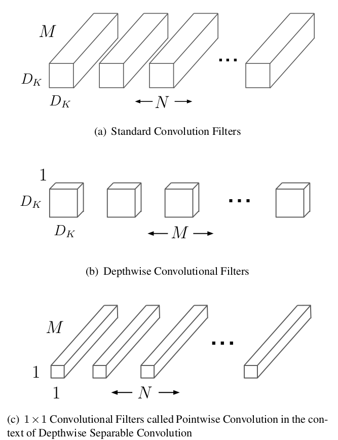Suppose we have the convolutional layer with kernel size $K$, input size $C_{in}\times H\times W$ and output size $C_{out} \times H \times W$ (stride=1). For a standard convolution operation, the computation complexity, here we use MACC (Multiply-accumulate, also known as MADD), is calculated as (for how to calculate FLOPs or MACC, we kindly recommend this great post: How Fast is my model?):
$$\begin{equation}\label{eq1}
K\times K\times C_{in}\times C_{out}\times H\times W.
\end{equation}$$
With decomposition, the two separate operation parts lead to output feature maps with exactly the same size as the standard counterpart does while with much less computation cost. How does that works?
OK, depth-wise convolution takes as input a single channel and output a single channel for each channel of the input volume, and then concatenates the output channels for the second stage, in which the point-wise convolution takes place. According to this, its corresponding computation cost is:
$$ K\times K\times H\times W\times C_{in}. $$
The point-wise convolution is a simple 1x1 convolution (also known as network-in-network), which transfers the $C_{in}\times H\times W$ volume produced by the depth-wise operation to a $C_{out}\times H\times W$ output volume. Since we have dealt with the input volume with a channel-by-channel strategy at first, so the purpose of point-wise operation is to combine the information of different channels and fuse them to new features. The point-wise operation costs
$$ 1\times 1\times C_{in}\times C_{out}\times H\times W = C_{in}\times C_{out}\times H\times W.$$
As a result, with the above decomposition, the total MACC is
$$\begin{equation}\label{eq2} K\times K\times H\times W\times C_{in} + C_{in}\times C_{out}.
\end{equation}$$
Compared with equation $\eqref{eq1}$, the reduction of computation is $\eqref{eq2}$/$\eqref{eq1}$ $=\frac{1}{C_{out}} + \frac{1}{K^2}$.
In addition, the number of parameters of the standard convolution filters is $K\times K\times C_{in}\times C_{out}$. With depth-wise and point-wise convolution, the number of parameters becomes $K\times K\times C_{in} + C_{in}\times C_{out} = C_{in}\times (K\times K + C_{out})$. In this way, both computation cost and model size can be considerably reduced. What’s more, this can be further done by applying the Resolution Multipier and Width Pultipier, which reduce the resolution of the input images and channels of all layers by a multipier coefficient.
If you are not clear, the following is the whole MobielNet v1 structure with all the bells and whistles.
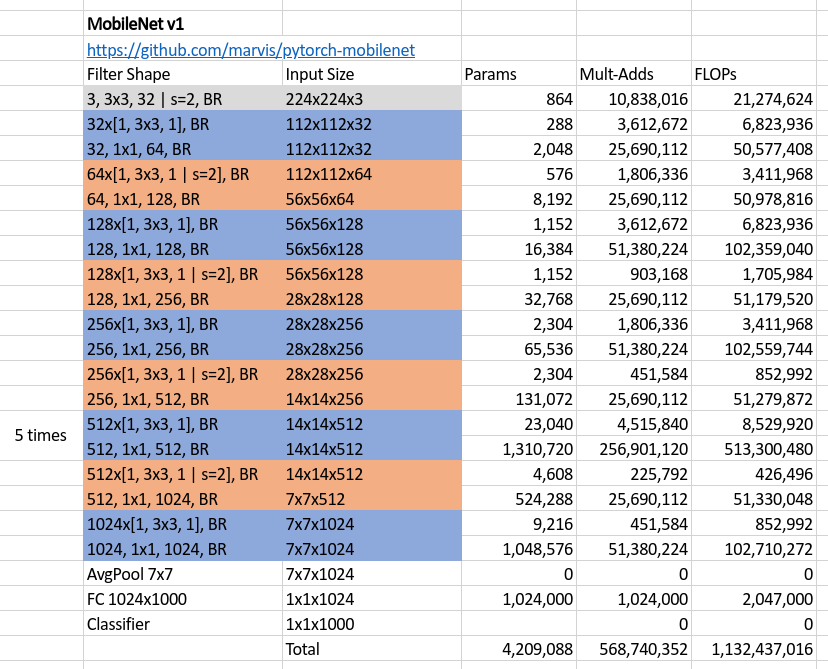
The structure was drawn according to the code in https://github.com/marvis/pytorch-mobilenet, where filter in each row of the table takes the input with size written immediately in the same row, and therefore, outputs a volume with size written in the following row, and then, processed by the next filter. Finally, BR means Batch normalization and Relu layers after a certain filter.
What surprised me was that there is no residual module at all, what if we add some residuals or shortcuts like ResNet? Afterall, the author got his purpose and the accuracy on ImageNet classification task is comparable to the one using the standard convolution filters instead as well as other famous CNN models.
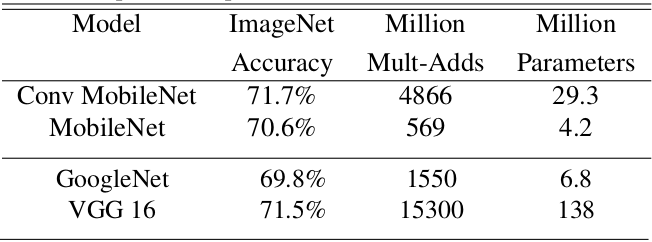
MobileNet v1 vs. SqueezeNet
First, let’s compare these two networks directly,
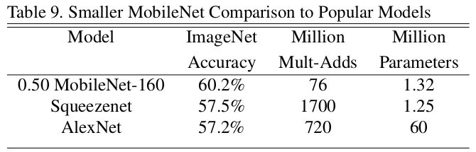where, 0.50 MobileNet-160 means halving the channels for all layers and setting the resolution of input images as $160\times 160$. We can see from the table that the only highlight of SqueezeNet is its model size. It is not ignorable that we also need the speed of computation when we embed our model into resource-restricted devices like Mobile phones. It’s hard to say that SqueezeNet is good enough when we see that its MACC is even more than AlexNet, with a large margin.
However, it’s worth thinking why SqueezeNet has so few parameters. Take a look at it basic unit (a fire module):
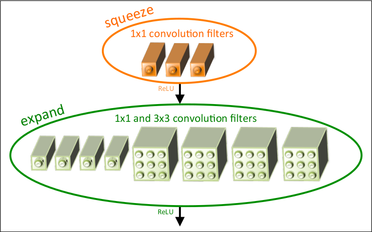The basic idea behind SqueezeNet comes from three principles. First, using 1x1 filters as possible as we can; Second, decreasing the number of input channels to 3x3 filters. The last pinciple is to downsample feature maps after the merging operation of residual blocks so that to keep more activations.
By stacking fire modules, we get a small model, while also having numerous computations.
MobileNet v1 vs. MobileNet v2
Keep it in mind that MobileNet v1’s success attributes to using the depth-wise and point-wise convolutions. These two kinds of filters become the very basic tools for most of the following works focusing on network compression and speeding up, including MobileNet v2, ShuffleNet v1 and v2.
For the MobileNet v2, similar to the above illustration, let’s first take a look at its whole structure. For analysis, we take part of it as the whole structure is stacked with similar components.
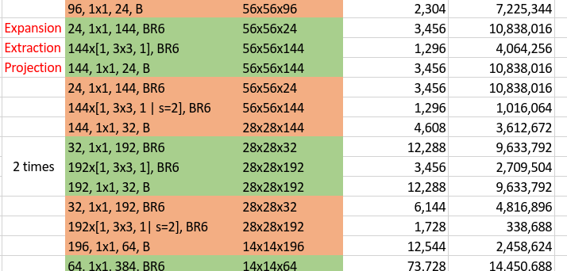In this illustration, the green unit means a residual block while the orange one means a normal block (without residual) with stride 2 to do downsampling. The main characteristic of MobileNet v2 architecture is for every unit or block, it first expands the number of channels by point-wise convolutions, then applies depth-wise convolutions with kernel size 3x3 on the expanded space, and finally projects back to low-channel feature spaces using point-wise convolutions again. For a block doesn’t having to downsample its input volume, an additional residual component is applied to enhance the performance. Another feature is, as illustrated in the above figure with a single B after each block which means Batch normalization only, it doesn’t use non-linearity at the output of blocks. Now, I have the following questions:
- When building a residual block, why connect the shortcut between two low-channel ends? Why not connect the “fat part” just like the original ResNet does?
- Why it needs to be “fat” in the middle of block? Why not just keep it slim so that to further reduce its size and parameters? Why not apply ReLu at the end of block?
- Comparing with ResNet, which applies ReLU on its “slim part” of each block, it seems like the two designing strategies (ResNet block and MobileNet v2 block) conflict with each other, why?
OK, let’s try to answer these questions (if you have any different idea, please do not hesitate to contact me, the email can be found in my profile).
For question 1, there is a intuition when designing MobileNet v2: bottlenecks actually contains all the necessary informations. So it would not cause information loss if we do like that. On the other hand, connecting the “fat parts” is possible, but that also means we should connect two volumes produced by two depth-wise convolutions, sounds strange because we usually connect the outputs of normal convolutions (here a point-wise covolution is a normal 1x1 convolution), but nothing stops trying.
For question 2, we can find our answer from the analysis of ReLU.
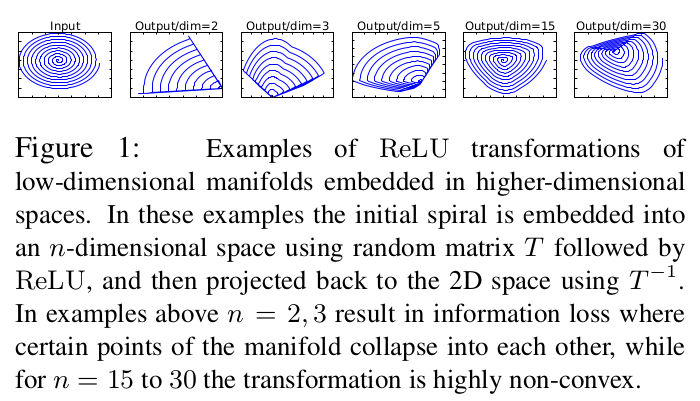ReLu cause information collapse. However, the higher the dimension of the input, the less the degree information collapses. So the high dimension in the middle of block is to avoid information loss. And intuitively, more channels usually means more powerful representative features thus to enhance the discriminability of a model. According to this, it is reasonable not to apply ReLU at the “slim output” of the block.
We can use the same explanation to attack ResNet, which indeed use ReLU on the low-dimensional features. So why is it still so effective? This would attribute to its high dimensions of input and output ends of a ResNet block, which ensure its representative ability even with the ReLU layer in the bottleneck.
The design art of MobileNet v2 is to keep few number of channels for the input and output of each block, while doing more complicated feature extraction inside the block with enough channels. This ensures the extraction of effective and high-level features of the image while reduce the computation cost at the same time, because the main computation cost is from the 1x1 convolution filters (see the following figure).
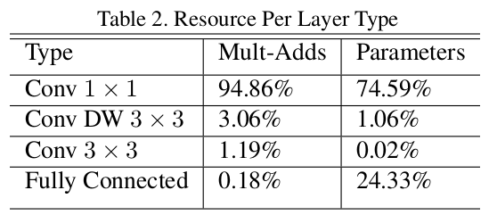MobileNet v2 has even less parameters and MACCs than v1. This because MobileNet v1 takes more channels for 1x1 convolutions than v2, leading to much more MACCs. While MobileNet v2 smartly avoid giving many channels to 1x1 convolutions, and do feature extraction mainly via depth-wise convolutions.
MobileNet v2 vs. ShuffleNet v1 vs. NasNet
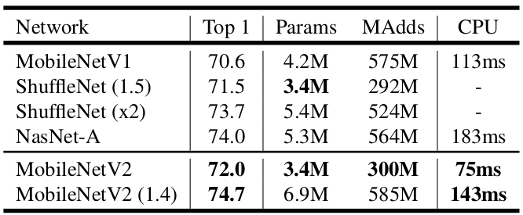Above figure shows that a ShuffleNet v1(1.5) and a MobileNet V2 have the similar model size (3.4M params) and computation cost ($\approx 300$M MACCs), and furthermore, the similar classification accuracy. This means that ShuffleNet v1 is at the same level of MobileNet v2, the two are closely comparable. So, what does a ShuffleNet v1 look like? Click here
Again, we capture part of it to analyse.
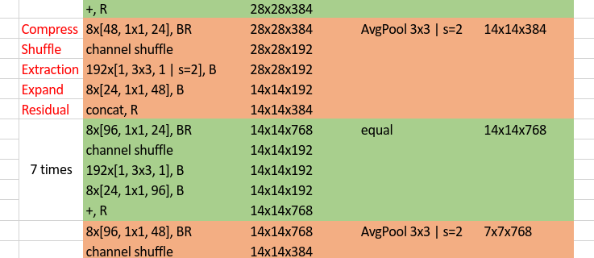Since we realize that the main computation takes place at the 1x1 convolutions, which also accounts for main part of parameters. Unlike MobileNet v2 who solves the problem by reducing number of channels inputted to 1x1 convolutions, ShuffleNet v1 is more straightforward. Specifically, rather than only applying group convolution (for group convolution, see ResNeXt, depth-wise convolution can be regarded as an extreme case of group convolution) on 3x3 filters, it also applies group operation on 1x1 filters. Although it reduces computation cost and number of parameters effectively, it leads to a problem: different groups cannot communicate with each other, thus restrict the power of model.
Shuffle in ShuffleNet v1 provides the solution of above problem by shuffling all the output channels of 1x1 group convolutions as a whole, so that enforce information communication among groups. And the most inspiring thing is the shuffle operation doesn’t take any additional parameters and computationally efficient.
To further reduce model size and computation cost, ShuffleNet v1 also uses BottleNecks as illustrated:
As discussed above, MobileNet v2 and ShuffleNet v1 both focus on reducing computation cost on 1x1 convolutions, while there are still three more differences according to their structures.
- Difference on how to apply residual. For MobileNet v2, no residual is used when the shape of input volume and output volume of a block doesn’t match. For ShuffleNet v1, when the two doesn’t match, a
AveragePool + Concatenationstrategy is used to do shortcut connection. - According to the above diagram, ShuffleNet v1 quickly downsamples the input image from 224x224 to 56x56, while MobileNet v2 only downsamples its input image to 112x112 in the first stages.
- According to the logic of MobileNet v2, ReLU layers should apply on “fat layers” rather than bottleneck layers. While ShuffleNet (both v1 and v2) more or less does the opposite (e.g., ReLU after the Compress operator, marked red in the figure). Why?
Well, I think it’s worth trying and see what will happen if we take the ReLU away after the 3x3 convolutions in MobileNet v1 or MobileNet v2 (e.g., only connect the ReLu to the first 1x1 convolution layer of each block mobileNet v2). On the other hand, the reason why ShuffleNet v1 doesn’t connect a ReLU after the 3x3 convolution layers comes from the explanation in Xception, which thought that for shallow features (i.e., the 1-channel deep feature spaces of depth-wise convolutions), non-linearity becomes harmful, possibly due to a loss of information.
NasNet, in which the word “Nas” is an abbreviation of Network architecture search, definitely is a more advanced technology to search for compact and efficient networks. The auto-search algorithms and other very recent research works (works in ICLR 2019, ICML 2019 and CVPR 2019) will be gone through in another post. Let’s proceed to ShuffleNet v2.
ShuffleNet v2 vs. All
The above methods are based on two principles, small model size and less computation cost. However, in practical applications, efforts taken on the above criterion doesn’t exactly bring a corresponding faster model in hardware equipments. There are some other factors we should take into account when designing an embeddable model for hardware devices – memory access cost (MAC) and battery consuming.
Based on the above findings, ShuffleNet v2 rethinks the previous compression models and proposes four useful designing guidelines.
G1, Equal channel width minimizes MAC (this means letting number of input channels equal to that of output channels);
G2, Excessive group convolution increase MAC (do not use or use less group convolutions);
G3, Network fragmentation reduces degree of parallelism (small stacked convolutions with in blocks and branches in NasNet);
G4, Element-wise operations are non-negligible (like ReLU and addition operations in residual block).
As described in the original paper, ShuffleNet v1 violates G2 (group convolutions) and G1 (bottleneck blocks), MobileNet v2 violates G1 (inverted bottleneck structure) and G4 (ReLU on “thick” feature maps), and NasNet violates G3 (too many branches).
So the problem is:
How to maintain a large number and equally wide channels with neither dense convolution nor too many groups?
We mention that all the above guidelines have been proved by a series of validation experiments. Let’s draw the building blocks of ShuffleNet v2 here (actually I’ve also drawn a table for ShuffleNet v2 structure here, but takes time to understand…)
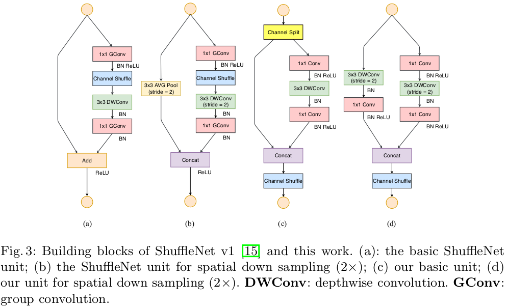How does it solve the problem?
- First, the
channel splitdivide the input channels into two parts, one of them keeps untouched, the other experiences a 1x1 + DW3x3 + 1x1 flowchart, here, the 1x1 doesn’t use group convolution. On one hand to follow G2, on the other hand, two branches indicates two groups. - Second, the two branches are merged by concatenation. By doing so, there is no add operations (follows G4), and all the ReLU and depth-wise convolutions only exist in half of all the input channels, which again follows G4.
- Then, after concatenation, channel shuffling is applied to enforce branch communication. In addition, the Concat + Shuffle + Split pipeline can be merge into a single element-wise operation, which follows G4.
- Similar to DenseNet, it takes the advantage of
feature reuse.
Under the same FLOPs, ShuffleNet v2 is superior than other models.
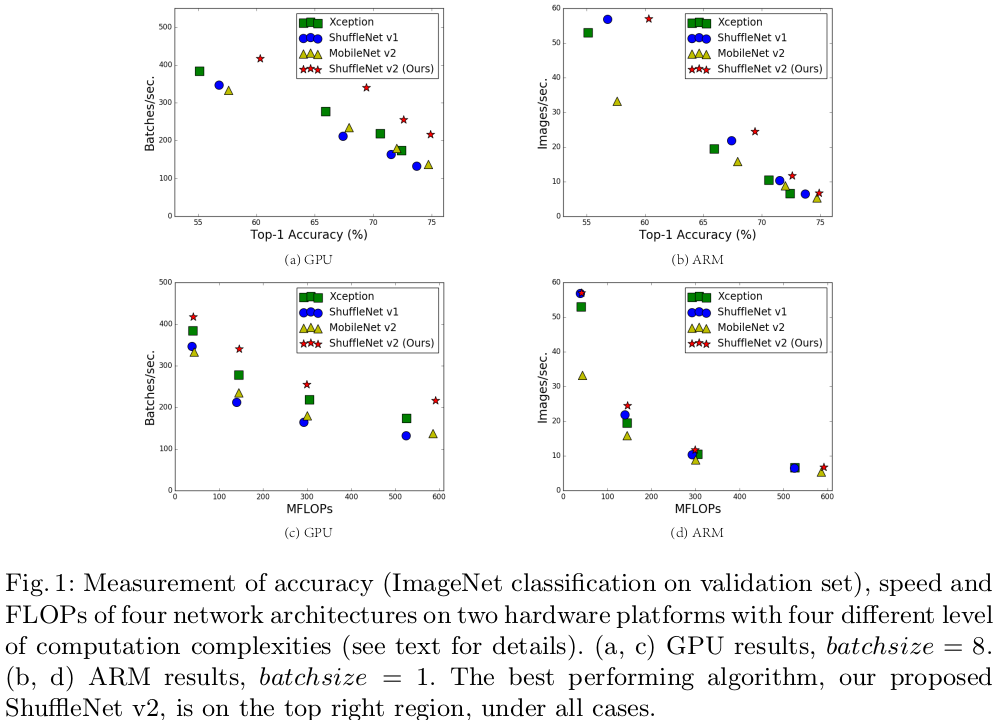Conclusion
We have analysed several classical network compression models, from which we can see that the main strategy to reduce model size and computation cost is using Depth-wise convolution, Group convolution and Point-wise convolution.
There are other interesting algorithms like network pruning, network quantization (e.g., binarize weiths and activations) and Network architecture search. They also lead to fast and small network models and will be discussed in the next post.
Note: Most of the figures are directly copied from the original paper.
Howard, Andrew G., et al. “Mobilenets: Efficient convolutional neural networks for mobile vision applications.” arXiv preprint arXiv:1704.04861 (2017). ↩︎
Sandler, Mark, et al. “Mobilenetv2: Inverted residuals and linear bottlenecks.” Proceedings of the IEEE Conference on Computer Vision and Pattern Recognition. 2018. ↩︎
Iandola, Forrest N., et al. “SqueezeNet: AlexNet-level accuracy with 50x fewer parameters and< 0.5 MB model size.” arXiv preprint arXiv:1602.07360 (2016). ↩︎
Zhang, Xiangyu, et al. “Shufflenet: An extremely efficient convolutional neural network for mobile devices.” Proceedings of the IEEE Conference on Computer Vision and Pattern Recognition. 2018. ↩︎
Ma, Ningning, et al. “Shufflenet v2: Practical guidelines for efficient cnn architecture design.” Proceedings of the European Conference on Computer Vision (ECCV). 2018. ↩︎
Zoph, Barret, et al. “Learning transferable architectures for scalable image recognition.” Proceedings of the IEEE conference on computer vision and pattern recognition. 2018. ↩︎